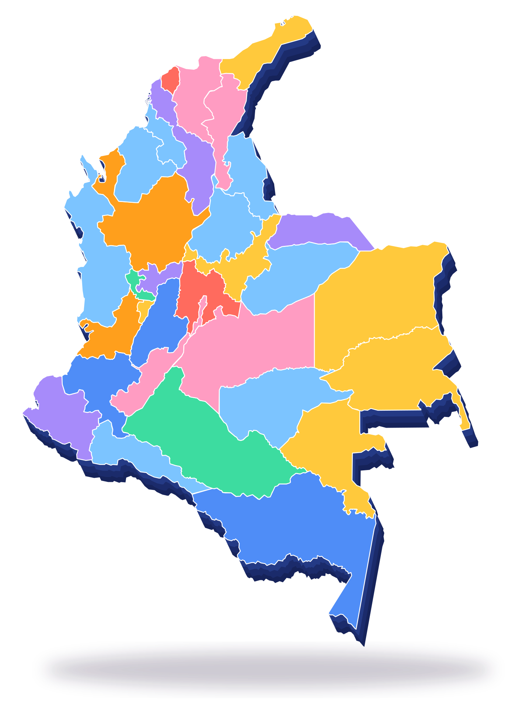
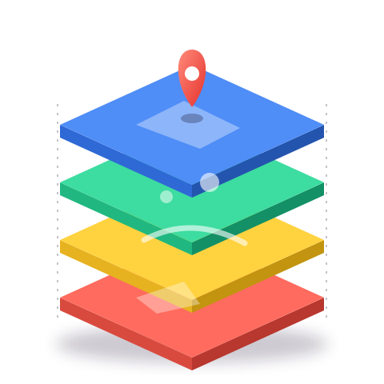

Descarga el territorio.
Entiende el mapa.
TerraDrop reúne municipios, veredas, áreas protegidas, vías, agua y coberturas de Colombia en un solo gestor. Eliges un lugar, el asistente arma la cola y te llevas archivos listos para QGIS.



Nueve capas, un solo clic por lugar
Elige departamento, municipio o vereda. TerraDrop consulta el servicio oficial, recorre todas las páginas de resultados y te entrega GeoJSON válido.
Todo el territorio, ya ordenado
Un índice nacional de 1.121 municipios con sus áreas protegidas, ríos principales y humedales, más las veredas del DANE 2024 y la cobertura de la tierra CLC 2024.
Pídelo como lo dirías
Escribe “quiero las vías y los ríos de Jardín, Antioquia” y el asistente encuentra el municipio, marca las capas y deja la cola lista. Funciona en tu navegador: lo que escribes no sale de tu equipo.

Una cola que trabaja por ti
Cada capa avanza por su cuenta: consulta por páginas, reintenta si el servidor se demora y marca el estado. Al final descargas capa por capa o todo junto en un ZIP.
Del archivo al geovisor
En Modo Aula, cada estudiante escribe su nombre y recibe un municipio. Descarga sus capas, las abre en QGIS y practica en una réplica guiada de Colombia en Mapas.

¿Qué quieres descargar?
Tu primer municipio está a un clic
Sin cuenta, sin instalar nada. Descarga, abre en QGIS y aprende a leer el mapa.
Abrir TerraDropModo Aula